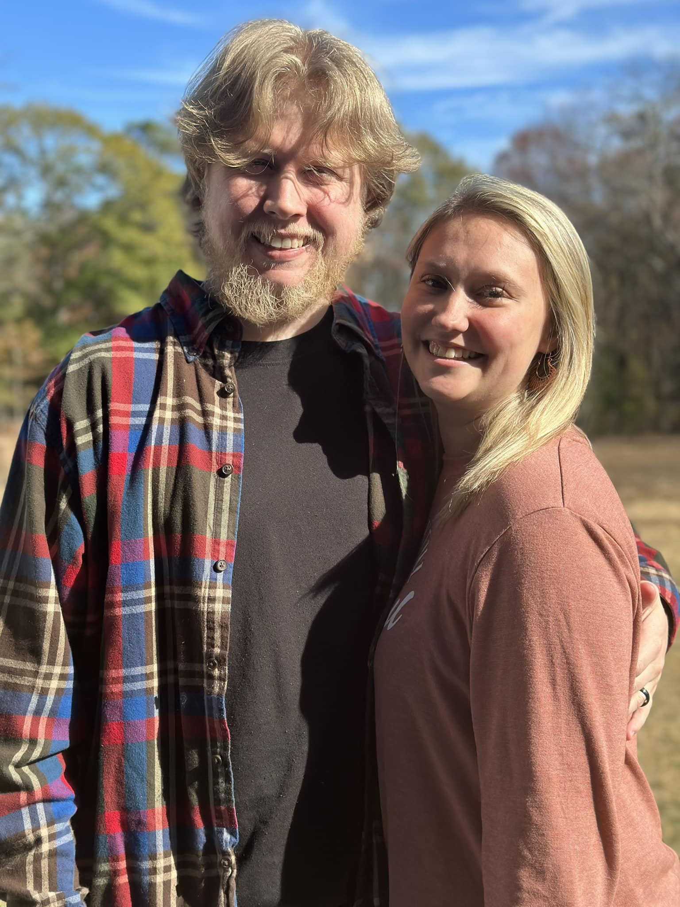

Hello, I'm Tristan

About Me
Aspiring software developer currently pursuing a B.S. in Computer Science at Southern Arkansas University. Skilled in Python, Java, C++, Dart, PHP, SQL, and familiar with MYSQL. Excels in problem-solving, analytical skills, and attention to detail. Seeking an internship to apply technical skills in a practical environment, further develop programming practices, enhance project management abilities, and contribute to impactful software solutions.
Languages: Java, Python, C/C++, SQL, Dart, PHP, HTML, CSS
Frameworks: Flask, WordPress, Flutter
Developer Tools: Git, VS Code, Visual Studio, PyCharm, IntelliJ, Android Studio, PHP Storm
Interests: 💻Programming, 🎮Gaming (Playing Helldivers 2 at the moment), ⛰️🐶 and going on hikes with my wife and dogs!
Projects

- Developed an assembler for the Hack assembly language, translating Hack assembly code into machine language
- Utilized advanced C++ features including STL maps and vectors, file I/O operations, and string manipulation to efficiently process assembly instructions
- Implemented multi-pass processing to handle symbols, loops, and variable declarations, ensuring a comprehensive analysis and conversion of the Hack assembly code

- Developed a time tracker using Flutter and Dart, aimed at offering a user-friendly interface for managing time spent on various activities
- Employed best practices in Flutter development, such as using state management solutions for data flow and UI updates, ensuring the application runs smoothly across a wide range of devices
- Designed and implemented a settings feature enabling users to customize the application according to their preferences, including themes, notification settings, and time formats
Contact
501-363-2733 | tristangarner20@gmail.com | linkedin.com/in/tristanacg | github.com/tristanacg
Download Resume